Lesespaziergang Materialpaket: 3 Geschichten, 6-fach differenziert – Herbst, Advent, Winter (Klasse 1–4, DaZ)

Lesespaziergang Vögel am Futterhaus – 6-fach differenziert mit Bildkarten, Sternchenaufgaben und Audio (Klasse 1–4)

Lesespaziergang Auf dem Weihnachtsmarkt – 6-fach differenziert mit Bildkarten, Sternchenaufgaben und Audio (Klasse 1–4)

Lesespaziergang Ein Nebeltag im November – 6-fach differenziert mit Bildkarten, Sternchenaufgaben und Audio (Klasse 1–4)

Lesespaziergang Nikolausabend: Stiefel, Sterne, Plätzchenduft – 8 Stationen in 3 Lesestufen mit Hörfassung (Klasse 1–2, DaZ)

Lesespaziergang Tiere im Winter: Pit, der Igel, sucht ein Bett – 8 Stationen in 3 Lesestufen mit Hörfassung (Klasse 1–2, DaZ)

Lesespaziergang Laternenzeit: Linas Laterne – 8 Stationen in 3 Lesestufen mit Hörfassung (Klasse 1–2, DaZ)
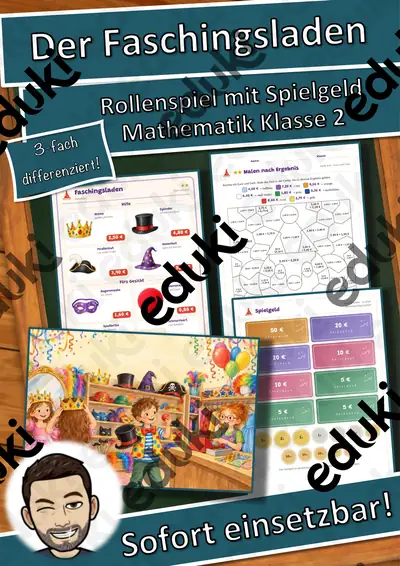
Der Faschingsladen – Rollenspiel Kombinatorik und Rechnen mit Geld, 3-fach differenziert (Klasse 2)

Lesespaziergang DaZ: Wir backen – Wortschatz mit Rätseln, 3-fach differenziert (Klasse 1–4)

Lesespaziergang DaZ: Spielen im Schnee – Wortschatz mit Rätseln, 3-fach differenziert (Klasse 1–4)

Lesespaziergang DaZ: Gemüse – Wortschatz mit Rätseln, 3-fach differenziert (Klasse 1–4)

Lesespaziergang DaZ: Sankt Martin – Wortschatz mit Rätseln, 3-fach differenziert (Klasse 1–4)

Materialpaket Rechenwelten im Winter für die 3. Klasse: 8 Mathe-Rollenspiele, 3-fach differenziert (Weihnachtsbäckerei, Lichterpark, Eisbahn & mehr)

Materialpaket Rechenwelten im Winter für die 2. Klasse: 6 Mathe-Rollenspiele, 3-fach differenziert (Weihnachtsmarkt, Kinderkino, Lebkuchen & mehr)
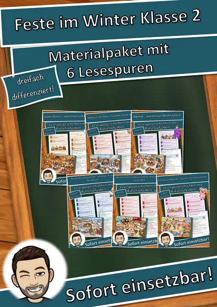
Materialpaket Feste im Winter für die 2. Klasse: 6 Lesespurgeschichten mit Rätselaufgaben (Sankt Martin, Nikolaus, Advent, Weihnachten & Silvester)
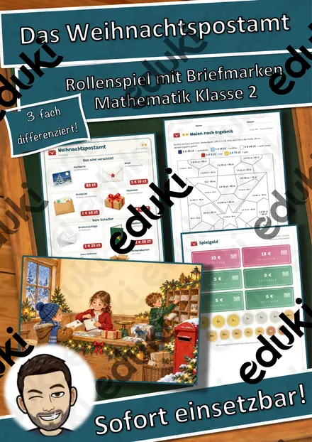
Das Weihnachtspostamt – Rollenspiel Rechnen mit Euro und Cent, gemischte Schreibweise, 3-fach differenziert (Klasse 2)

Igel im Laubnest – Klappnest basteln mit Sachtext Winterschlaf, 3-fach differenziert (Tiere im Herbst, Klasse 1/2)

St.-Martins-Laterne aus einem Blatt – falten, einschneiden, rollen, mit Martinsgeschichte, 3-fach differenziert (Klasse 2/3)

Herbst-Klappkarte Eichhörnchen – Figurenkarte basteln mit Sachtext, 3-fach differenziert (Tiere im Herbst, Klasse 2/3)

Flatter-Fledermaus am Stab – bewegliche Bastelfigur mit Sachtext, 3-fach differenziert (Halloween/Herbst, Klasse 2/3)
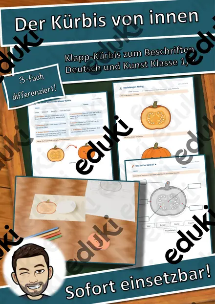
Der Kürbis von innen – Klapp-Kürbis basteln und beschriften, 3-fach differenziert (Halloween/Herbst, Klasse 1/2)

Halloween-Ziehkarten – Präpositionen sichtbar machen: über, vor, neben, auf, 3-fach differenziert (Klasse 1/2, DaZ)

Spinnen-Rätsel-Faltkarte – Halloween-Rätsel lesen und schreiben, Pop-up-Spinne, 3-fach differenziert (Klasse 2/3)

Mein Grusel-Meter – Halloween-Drehkarte basteln, Adjektive steigern und vergleichen, 3-fach differenziert (Klasse 2/3)

Halloween-Hüpffiguren – 6 Bastelvorlagen mit Federkugel, Steckbrief und Geschichte, 3-fach differenziert (Klasse 1/2)
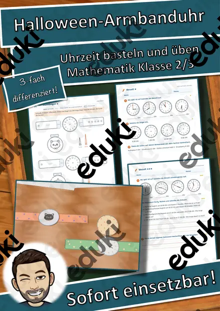
Halloween-Armbanduhr aus Papier – Uhrzeit lernen mit Bastelvorlage, 3-fach differenziert (Klasse 2/3)
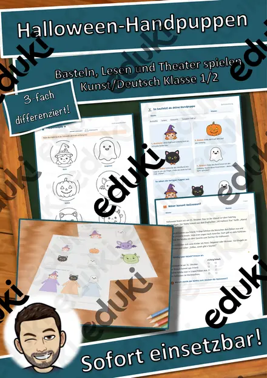
Halloween-Handpuppen – Bastelvorlage mit Sachtext und Puppentheater, 3-fach differenziert (Klasse 1/2)
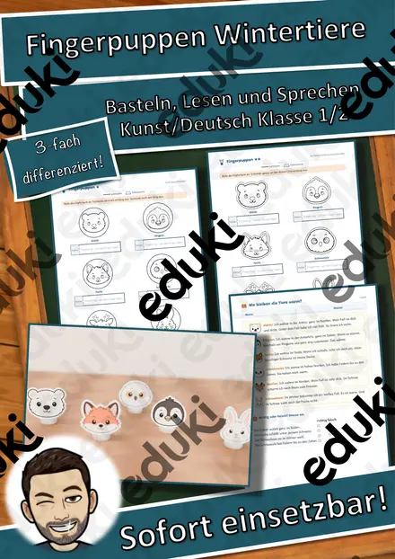
Fingerpuppen Wintertiere – Bastelvorlage mit Sachtext und Sprechaufgaben, 3-fach differenziert (Klasse 1/2)
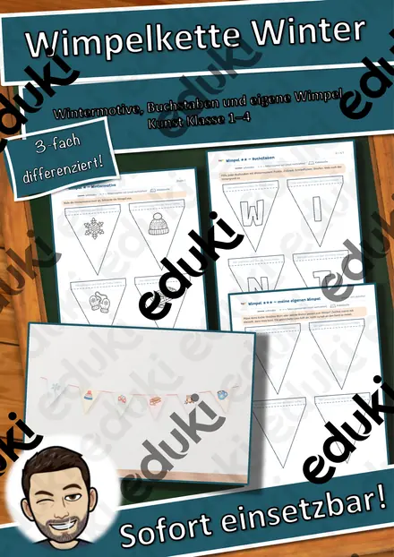
Wimpelkette Winter – Bastelvorlage mit Wintermotiven, Buchstaben WINTER und eigenen Wimpeln, 3-fach differenziert (Klasse 1–4)

Advents-Häuserstadt – Klassen-Adventskalender zum Basteln mit 24 Adventsaufgaben, 3-fach differenziert (Klasse 1–4)
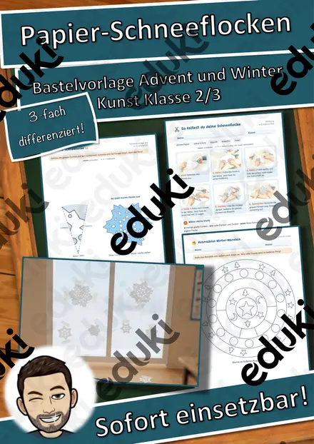
Papier-Schneeflocken falten und schneiden – Winter-Bastelvorlage mit Sachtext, 3-fach differenziert (Klasse 2/3)

Fensterlaterne Sankt Martin – Laterne basteln mit Lesetext zur Legende, 3-fach differenziert (Klasse 1–3)
Spiral-Gespenster zum Aufhängen – Halloween-Bastelvorlage mit Lesetext, 3-fach differenziert (Klasse 2/3)

Gespensterhaus aus meiner Hand – Halloween-Bastelvorlage mit Lesen und Schreiben, 3-fach differenziert (Klasse 1/2)
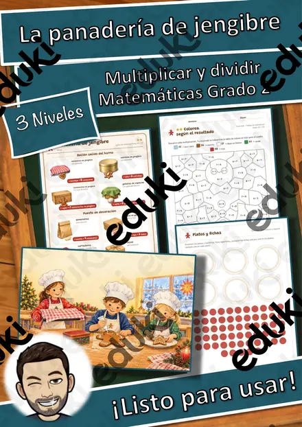
La panadería de jengibre – Rollenspiel Einmaleins und Teilen auf Spanisch, 3-fach differenziert (Klasse 2)

Lesespaziergang DaZ: Im Klassenzimmer – Wortschatz mit Rätseln, 3-fach differenziert (Klasse 1–4)
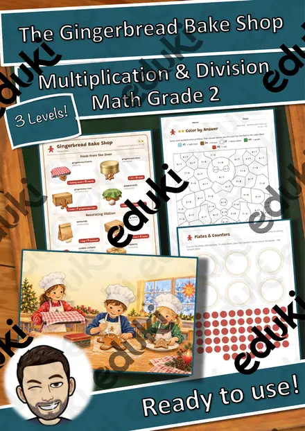
The Gingerbread Bake Shop – Rollenspiel Einmaleins und Teilen auf Englisch, 3-fach differenziert (Klasse 2)
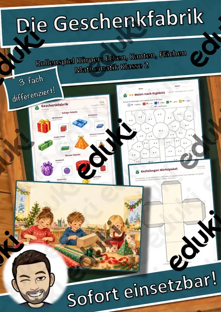
Die Geschenkfabrik – Rollenspiel Körper, Ecken, Kanten und Flächen, 3-fach differenziert (Klasse 2)
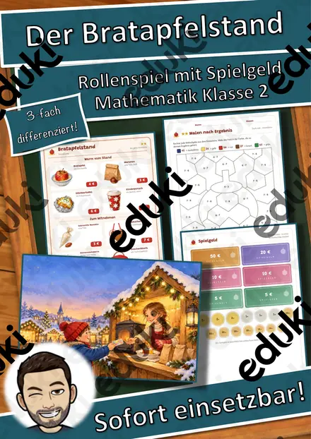
Der Bratapfelstand – Rollenspiel Einmaleins mit Geld, Euro und Cent, 3-fach differenziert (Klasse 2)

Lesespaziergang: Frühblüher im Garten und im Wald – 3-fach differenziert (★/★★/★★★), Klasse 2–4

Lesespaziergang: Verkleiden und Feiern im Fasching – 3-fach differenziert (★/★★/★★★), Klasse 2–4

Lesespaziergang: Tiere in Eis und Wüste – 3-fach differenziert (★/★★/★★★), Klasse 2–4

Lesespaziergang: Obst und Gemüse im Winter – 3-fach differenziert (★/★★/★★★), Klasse 2–4

Lesespaziergang: Spuren im Schnee – 3-fach differenziert (★/★★/★★★), Klasse 2–4
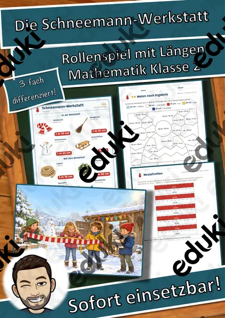
Die Schneemann-Werkstatt – Rollenspiel Längen m und cm, 3-fach differenziert (Klasse 2)

Lesespaziergang: Plätzchen backen im Advent – 3-fach differenziert (★/★★/★★★), Klasse 2–4
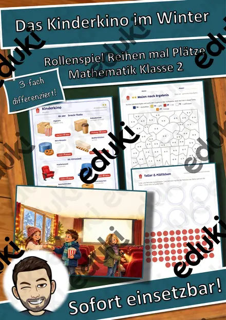
Das Kinderkino im Winter – Rollenspiel Einmaleins und Verteilen, 3-fach differenziert (Klasse 2)
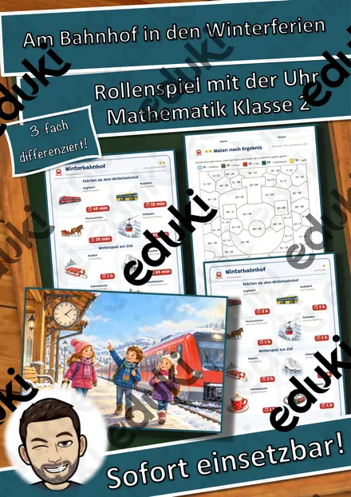
Am Bahnhof in den Winterferien – Rollenspiel Uhrzeit und Zeitspannen, 3-fach differenziert (Klasse 2)
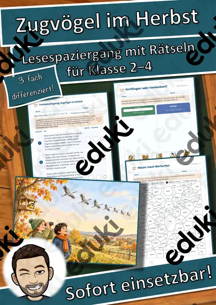
Lesespaziergang: Zugvögel im Herbst – 3-fach differenziert (★/★★/★★★), Klasse 2–4
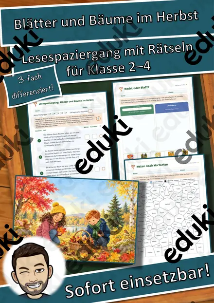
Lesespaziergang: Blätter und Bäume im Herbst – 3-fach differenziert (★/★★/★★★), Klasse 2–4
Die Lebkuchen-Backstube – Rollenspiel Einmaleins und Teilen, 3-fach differenziert (Klasse 2)
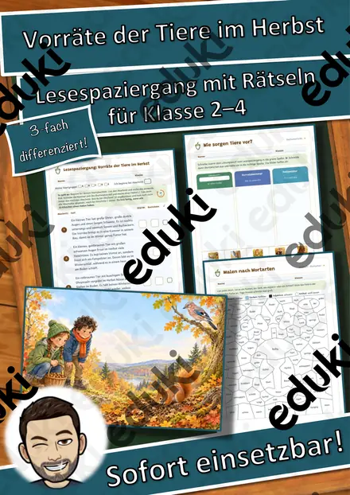
Lesespaziergang: Vorräte der Tiere im Herbst – 3-fach differenziert (★/★★/★★★), Klasse 2–4
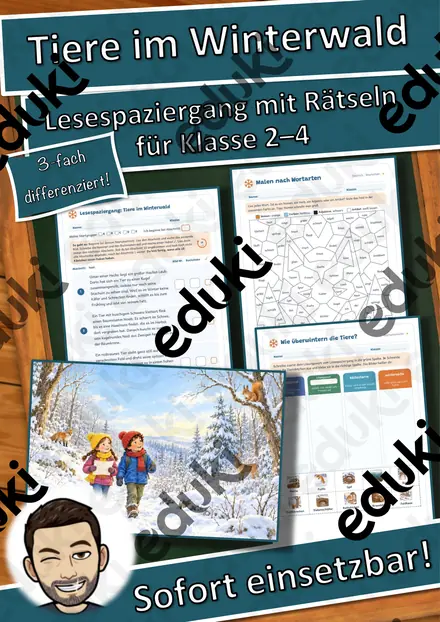
Lesespaziergang: Tiere im Winterwald – 3-fach differenziert (★/★★/★★★), Klasse 2–4
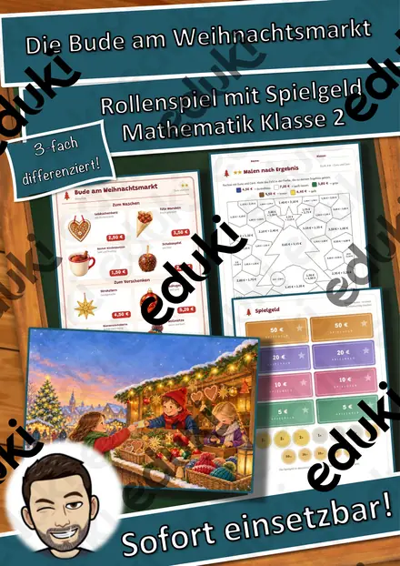
Die Bude am Weihnachtsmarkt – Rollenspiel Rechnen mit Geld, Euro und Cent, 3-fach differenziert (Klasse 2)
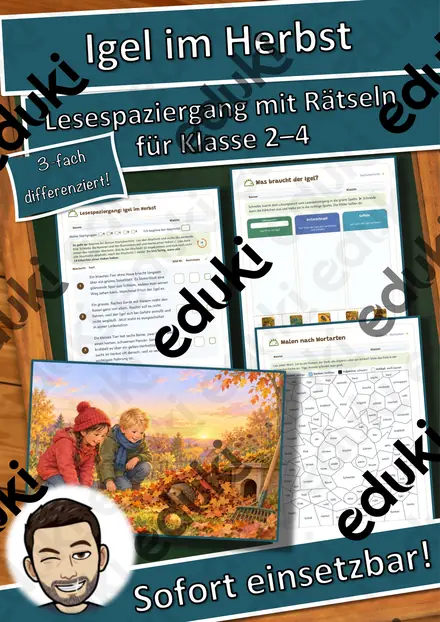
Lesespaziergang: Igel im Herbst – 3-fach differenziert (★/★★/★★★), Klasse 2–4
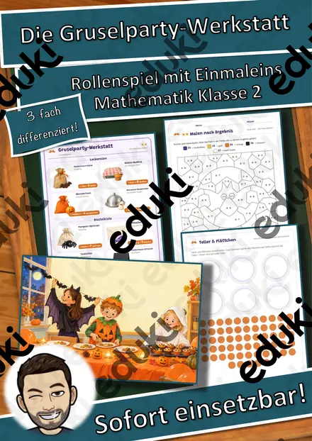
Die Gruselparty-Werkstatt – Rollenspiel Einmaleins und Verteilen, 3-fach differenziert (Klasse 2)
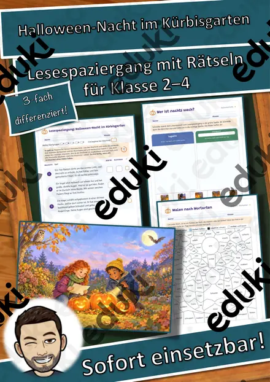
Lesespaziergang: Halloween-Nacht im Kürbisgarten – 3-fach differenziert (★/★★/★★★), Klasse 2–4
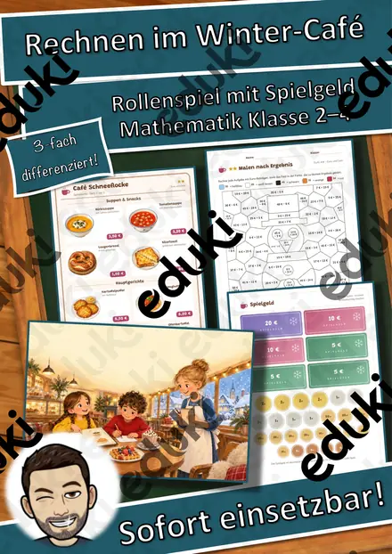
Rechnen im Winter-Café – Rollenspiel Rechnen mit Geld, 3-fach differenziert (Klasse 2–4)
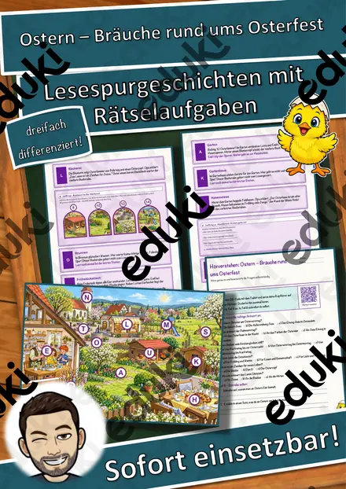
Ostern – Bräuche rund ums Osterfest – Lesespurgeschichte mit Rätselaufgaben (Klasse 2)
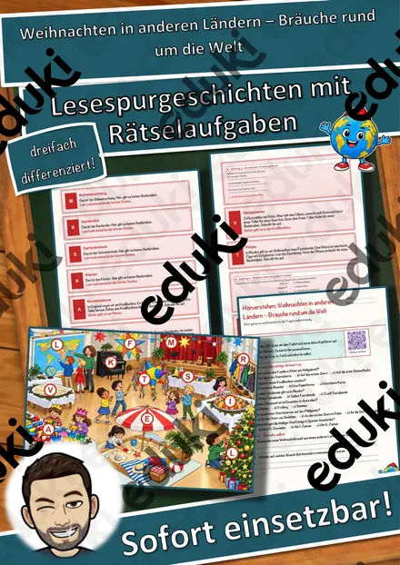
Weihnachten in anderen Ländern – Bräuche rund um die Welt – Lesespurgeschichte mit Rätselaufgaben (Klasse 2)
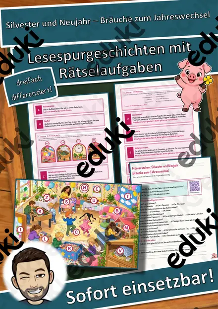
Silvester und Neujahr – Bräuche zum Jahreswechsel – Lesespurgeschichte mit Rätselaufgaben (Klasse 2)

Advent – warten auf Weihnachten – Lesespurgeschichte mit Rätselaufgaben (Klasse 2)

Die Weihnachtsgeschichte – Herberge, Hirten, Sterndeuter – Lesespurgeschichte mit Rätselaufgaben (Klasse 2)

Nikolaus von Myra – Legende und Brauch – Lesespurgeschichte mit Rätselaufgaben (Klasse 2)

Kastanien zählen – Zehner und Einer bündeln – Lesespurgeschichte mit Rätselaufgaben (Klasse 2)

Sankt Martin – vom Teilen und Helfen – Lesespurgeschichte mit Rätselaufgaben (Klasse 2)
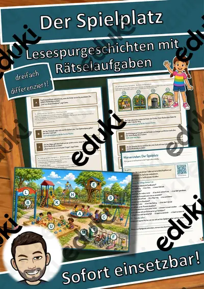
Der Spielplatz – Lesespurgeschichte mit Rätselaufgaben (Klasse 2)
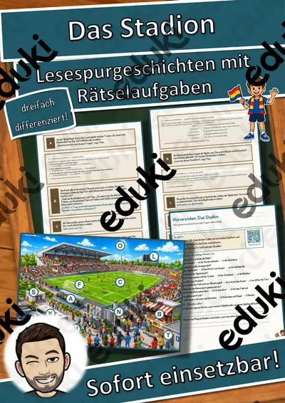
Das Stadion – Lesespurgeschichte mit Rätselaufgaben (Klasse 2)
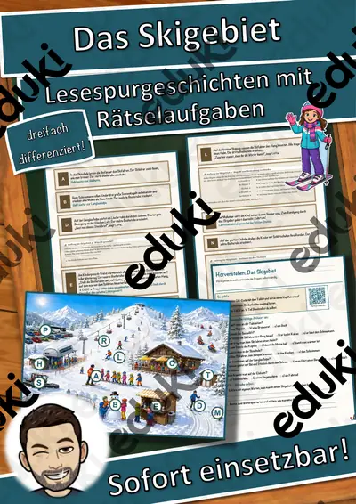
Das Skigebiet – Lesespurgeschichte mit Rätselaufgaben (Klasse 2)
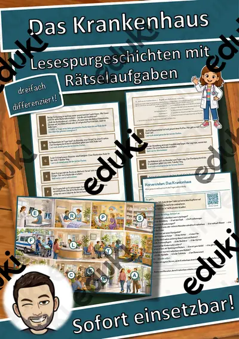
Das Krankenhaus – Lesespurgeschichte mit Rätselaufgaben (Klasse 2)

DaZ-Wortschatz Materialpaket: 6 Wortfelder differenziert A1/A2/B1 – Hörszenen (QR), Lückentexte, Rollenspiele, Sprechkarten

DaZ-Wortschatz Körper und Gesundheit – differenziert A1/A2/B1: Hörszene (QR), Lückentexte, Rollenspiel

DaZ-Wortschatz Unterwegs in der Stadt – differenziert A1/A2/B1: Hörszene (QR), Lückentexte, Rollenspiel

DaZ-Wortschatz Mein Zuhause – differenziert A1/A2/B1: Hörszene (QR), Lückentexte, Rollenspiel

DaZ-Wortschatz Kleidung und Wetter – differenziert A1/A2/B1: Hörszene (QR), Lückentexte, Rollenspiel

DaZ-Wortschatz Essen und Trinken – differenziert A1/A2/B1: Hörszene (QR), Lückentexte, Rollenspiel

DaZ-Wortschatz In der Schule – differenziert A1/A2/B1: Hörszene (QR), Lückentexte, Rollenspiel

Domino: Piraten – Bild-Wort-Spiele – Klasse 1–4
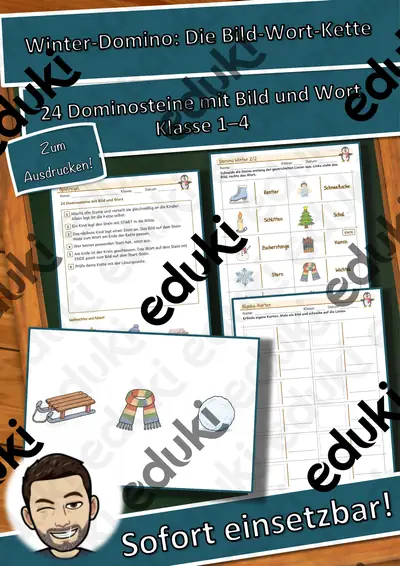
Winterzeit-Spiele: Winter-Domino: Die Bild-Wort-Kette – Klasse 1–4

Wortgitter-Suchsel: Im Restaurant – Wortgitter – Klasse 1–4

Sprechanlässe: Herbst – Sprechanlässe – Klasse 1–4
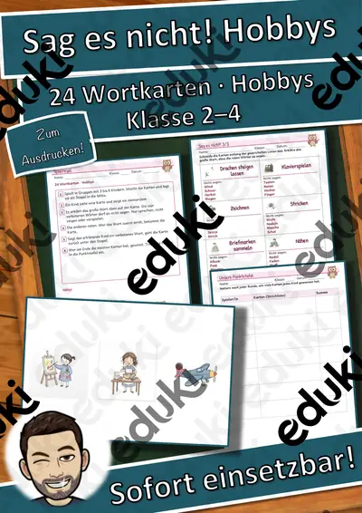
Wortspiele: Sag es nicht! Hobbys – Klasse 2–4
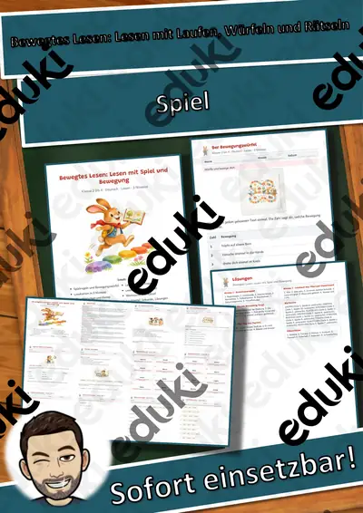
Bewegtes Lesen: Lesen mit Laufen, Würfeln und Rätseln

Schreibroute Herbst: Laufdiktat und Satzbau in drei Stufen
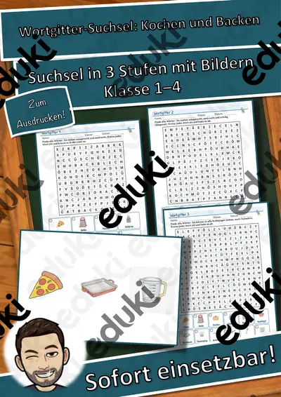
Wortgitter-Suchsel: Kochen und Backen – Wortgitter – Klasse 1–4

Klammerkarten: Ritter und Burg – Klammerkarten – Klasse 1–4
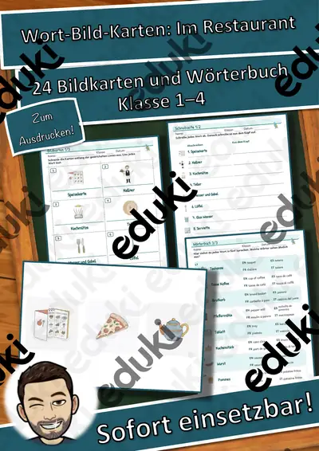
Wort-Bild-Karten: Im Restaurant – Wort-Bild-Karten – Klasse 1–4

Sprechanlässe: Am Meer – Sprechanlässe – Klasse 1–4
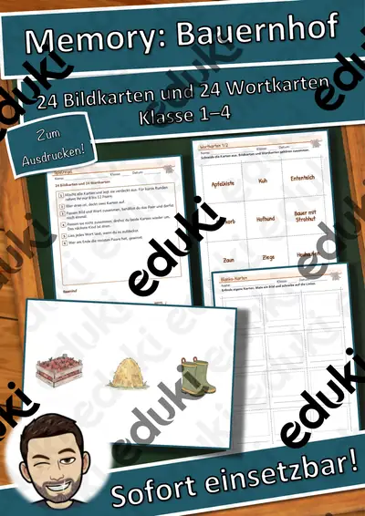
Memory: Bauernhof – Bild-Wort-Spiele – Klasse 1–4

Ich habe, wer hat? Kleidung – Lese-Schleifen – Klasse 1–4
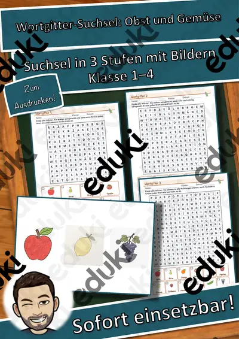
Wortgitter-Suchsel: Obst und Gemüse – Wortgitter – Klasse 1–4

Himmel und Hölle: Piraten – Himmel und Hölle – Klasse 1–4
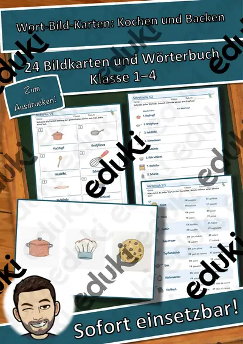
Wort-Bild-Karten: Kochen und Backen – Wort-Bild-Karten – Klasse 1–4

Lesen, Malen und Kleben: Körper und Sinne – Lesen und Malen – Klasse 1–4

Sprechanlässe: Piraten – Sprechanlässe – Klasse 1–4

Domino: Bauernhof – Bild-Wort-Spiele – Klasse 1–4

Ich habe, wer hat? Im Restaurant – Lese-Schleifen – Klasse 1–4

Ich habe, wer hat? Kochen und Backen – Lese-Schleifen – Klasse 1–4

Wortspiele: Sag es nicht! Frühling – Klasse 2–4

Domino-Werkstatt: Domino Einmaleins mit Darstellungen – kostenlos, Klasse 2–4

Wortgitter-Suchsel: Im Garten – Wortgitter – Klasse 1–4

Klammerkarten: Piraten – Klammerkarten – Klasse 1–4

Wort-Bild-Karten: Obst und Gemüse – Wort-Bild-Karten – Klasse 1–4

Lesen, Malen und Kleben: Märchen – Lesen und Malen – Klasse 1–4

Rechenheft Zahlenraum 100: Üben, Spielen, Kontrollieren

Domino-Werkstatt: Zahlen-Domino bis 100 – kostenlos, Klasse 1–2

Wortgitter-Suchsel: Haustiere – Wortgitter – Klasse 1–4

Himmel und Hölle: Am Meer – Himmel und Hölle – Klasse 1–4

Wort-Bild-Karten: Berufe – Wort-Bild-Karten – Klasse 1–4

Lesen, Malen und Kleben: Zirkus – Lesen und Malen – Klasse 1–4

Sprechanlässe: Körper und Sinne – Sprechanlässe – Klasse 1–4

Memory: Zirkus – Bild-Wort-Spiele – Klasse 1–4

Domino: Zirkus – Bild-Wort-Spiele – Klasse 1–4

Sicher Lesen Materialpaket: 3 Einheiten – Sicherheitsthemen einfach lesen und verstehen (Grundschule, Klasse 1–2)

Sicher Lesen Mein Körper, meine Grenzen – Sicherheitsthemen einfach lesen und verstehen (Grundschule, Klasse 1–2)

Sicher Lesen Feuer und Notruf – So handle ich richtig – Sicherheitsthemen einfach lesen und verstehen (Grundschule, Klas

Sicher Lesen Sicher auf dem Weg – Verkehrsregeln und Verkehrszeichen verstehen – Sicherheitsthemen einfach lesen und ver

Klammerkarten: Am Meer – Klammerkarten – Klasse 1–4

Fächer-Steckbriefe A–Z Klasse 1–10: Baukasten für Lehrkräfte – kostenlos

Lernentwicklungsgespräche Klasse 1–10: Baukasten für Lehrkräfte – kostenlos

Elternabend Klasse 1–10: Baukasten für Lehrkräfte – kostenlos

Klammerkarten: Dinosaurier – Klammerkarten – Klasse 1–4

Ich habe, wer hat? Obst und Gemüse – Lese-Schleifen – Klasse 1–4

Himmel und Hölle: Dinosaurier – Himmel und Hölle – Klasse 1–4

Wort-Bild-Karten: Bauernhof – Wort-Bild-Karten – Klasse 1–4

Sprechanlässe: Sport – Sprechanlässe – Klasse 1–4

Memory: Schule und Klassenzimmer – Bild-Wort-Spiele – Klasse 1–4

Wortspiele: Sag es nicht! Sommer – Klasse 2–4

Himmel und Hölle: Bauernhof – Himmel und Hölle – Klasse 1–4

Lesen, Malen und Kleben: Weltall – Lesen und Malen – Klasse 1–4

Wortgitter-Suchsel: Berufe – Wortgitter – Klasse 1–4

Lesen, Malen und Kleben: Ritter und Burg – Lesen und Malen – Klasse 1–4

Sprechanlässe: Bauernhof – Sprechanlässe – Klasse 1–4

Domino: Schule und Klassenzimmer – Bild-Wort-Spiele – Klasse 1–4

Ich habe, wer hat? Im Garten – Lese-Schleifen – Klasse 1–4

Wortspiele: Sag es nicht! Im Restaurant – Klasse 2–4

Wortgitter-Suchsel: Zirkus – Wortgitter – Klasse 1–4

Himmel und Hölle: Schule und Klassenzimmer – Himmel und Hölle – Klasse 1–4

Wort-Bild-Karten: Im Garten – Wort-Bild-Karten – Klasse 1–4

Lesen, Malen und Kleben: Piraten – Lesen und Malen – Klasse 1–4

Memory: Herbst – Bild-Wort-Spiele – Klasse 1–4

Ich habe, wer hat? Berufe – Lese-Schleifen – Klasse 1–4

Wortspiele: Sag es nicht! Kochen und Backen – Klasse 2–4

Klammerkarten: Bauernhof – Klammerkarten – Klasse 1–4

Wort-Bild-Karten: Haustiere – Wort-Bild-Karten – Klasse 1–4

Lesen, Malen und Kleben: Am Meer – Lesen und Malen – Klasse 1–4

Sprechanlässe: Haustiere – Sprechanlässe – Klasse 1–4

Domino: Herbst – Bild-Wort-Spiele – Klasse 1–4

Ich habe, wer hat? Haustiere – Lese-Schleifen – Klasse 1–4

Wortspiele: Sag es nicht! Obst und Gemüse – Klasse 2–4

Wortgitter-Suchsel: Schule und Klassenzimmer – Wortgitter – Klasse 1–4

Wortgitter-Suchsel: Herbst – Wortgitter – Klasse 1–4

Klammerkarten: Schule und Klassenzimmer – Klammerkarten – Klasse 1–4

Wort-Bild-Karten: Zirkus – Wort-Bild-Karten – Klasse 1–4

Lesen, Malen und Kleben: Dinosaurier – Lesen und Malen – Klasse 1–4

Ich habe, wer hat? Zirkus – Lese-Schleifen – Klasse 1–4

Wortspiele: Sag es nicht! Im Garten – Klasse 2–4

Himmel und Hölle: Herbst – Himmel und Hölle – Klasse 1–4

Wort-Bild-Karten: Märchen – Wort-Bild-Karten – Klasse 1–4

Lesen, Malen und Kleben: Bauernhof – Lesen und Malen – Klasse 1–4

Sprechanlässe: Zirkus – Sprechanlässe – Klasse 1–4

Ich habe, wer hat? Märchen – Lese-Schleifen – Klasse 1–4

Jahreszeiten-Werkstatt: Ostern: Ausmalbilder mit Wörtern – Plus-Paket, Klasse 1–4

Domino-Werkstatt: Domino Einmaleins mit Darstellungen – Plus-Paket, Klasse 2–4

Domino-Werkstatt: Zahlen-Domino bis 100 – Plus-Paket, Klasse 1–2

Klammerkarten: Herbst – Klammerkarten – Klasse 1–4

Wort-Bild-Karten: Schule und Klassenzimmer – Wort-Bild-Karten – Klasse 1–4

Lesen, Malen und Kleben: Schule und Klassenzimmer – Lesen und Malen – Klasse 1–4

Sprechanlässe: Märchen – Sprechanlässe – Klasse 1–4

Ich habe, wer hat? Schule und Klassenzimmer – Lese-Schleifen – Klasse 1–4

Winterzeit-Spiele: Ich habe, wer hat? Die Weihnachts-Schleife – Klasse 1–4

Wort-Bild-Karten: Herbst – Wort-Bild-Karten – Klasse 1–4

Lesen, Malen und Kleben: Herbst – Lesen und Malen – Klasse 1–4

Sprechanlässe: Schule und Klassenzimmer – Sprechanlässe – Klasse 1–4

Ich habe, wer hat? Herbst – Lese-Schleifen – Klasse 1–4

Wortspiele: Sag es nicht! Haustiere – Klasse 2–4

Wortspiele: Sag es nicht! Zirkus – Klasse 2–4

Wortspiele: Sag es nicht! Märchen – Klasse 2–4

Winterzeit-Spiele: Memory: Winter und Weihnachten – Bild und Wort – Klasse 1–4

Winterzeit-Spiele: Sag es nicht! Das Weihnachtswörter-Spiel – Klasse 1–4

Wortspiele: Sag es nicht! Sport – Klasse 2–4

Wortspiele: Sag es nicht! Bauernhof – Klasse 2–4

Klassen-Werkstatt: Motivationsposter für die Klasse – kostenlos, Klasse 1–4

Klassen-Werkstatt: Geburtstagskalender mit Urkunde und Krone – kostenlos, Klasse 1–4

Klassen-Werkstatt: Tagesplankarten für die Tafel – kostenlos, Klasse 1–4

Klassen-Werkstatt: Schreibpapier Lineatur 1 bis 4 – kostenlos, Klasse 1–4

Elternarbeit für Lehrkräfte – Elterngespräch, Vorlagen Klasse 1–4
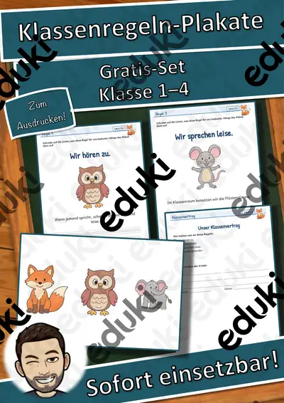
Klassen-Werkstatt: Klassenregeln-Plakate – kostenlos, Klasse 1–4
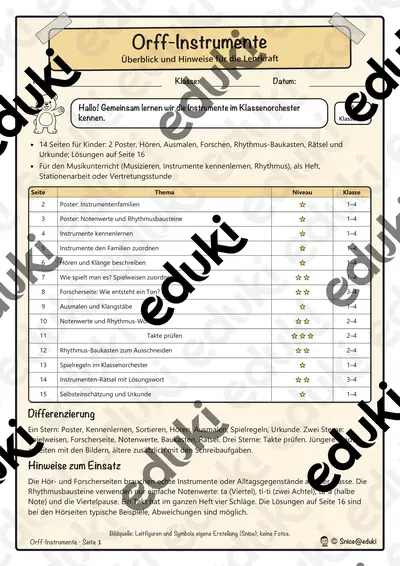
Orff-Instrumente – Mal-, Hör- und Forscherheft mit Postern, Kl. 1–4

DaZ Zeit und Kalender: Wochentage, Monate, Jahreszeiten A1/A2/B1, QR

Wortspiele: Sag es nicht! Schule und Klassenzimmer – Klasse 2–4
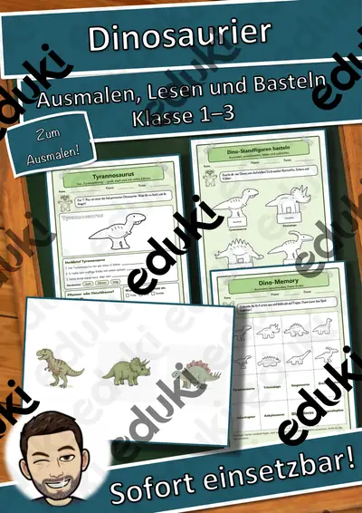
Dinosaurier zum Ausmalen, Lesen und Basteln – Kl. 1–3

Daten & Diagramme zum Ausmalen – Strichlisten, Säulendiagramme Kl. 2–4
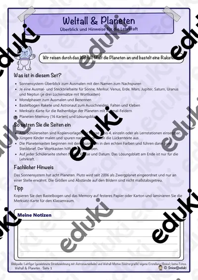
Weltall & Planeten zum Ausmalen und Basteln – Sonnensystem Kl. 2–4
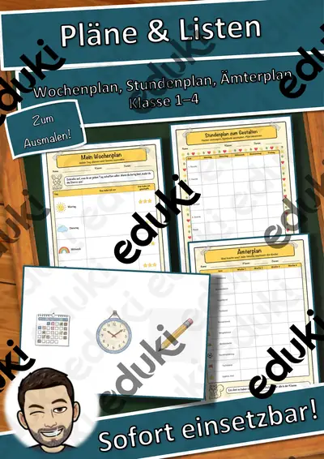
Pläne & Listen zum Ausmalen – Wochenplan, Stundenplan, Ämterplan Kl. 1–4

Wortspiele: Sag es nicht! Herbst – Klasse 2–4

Soziales Lernen – Gefühle, Streit lösen, Klassenrat: Heft mit Postern und Karten Kl. 1–4
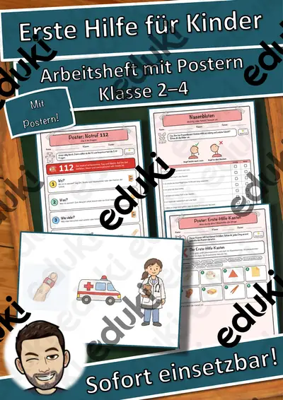
Erste Hilfe für Kinder – Arbeitsheft mit Postern, Notruf & Wunden Kl. 2–4
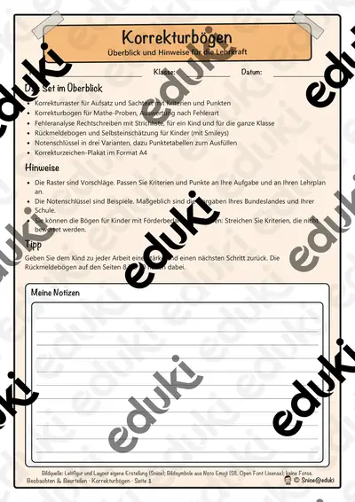
Korrekturbögen für Lehrkräfte – Korrekturraster, Vorlagen Klasse 1–4
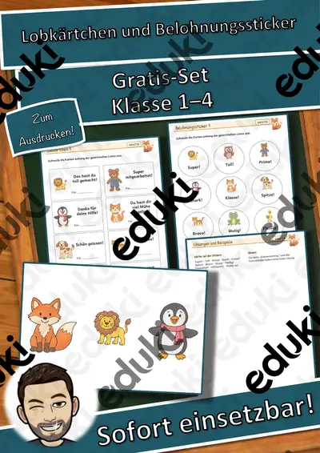
Klassen-Werkstatt: Lobkärtchen und Belohnungssticker – kostenlos, Klasse 1–4
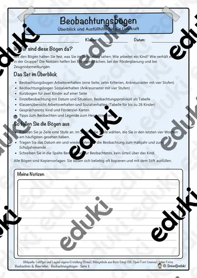
Beobachtungsbögen für Lehrkräfte – Arbeits- und Sozialverhalten, Vorlagen Klasse 1–4

Klassen-Werkstatt: Motivationsposter für die Klasse – Plus-Paket, Klasse 1–4
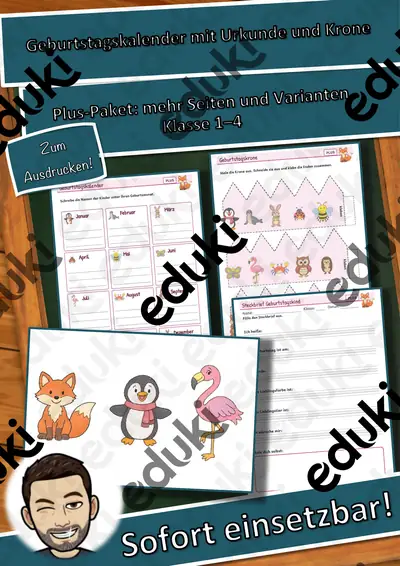
Klassen-Werkstatt: Geburtstagskalender mit Urkunde und Krone – Plus-Paket, Klasse 1–4

Klassen-Werkstatt: Tagesplankarten für die Tafel – Plus-Paket, Klasse 1–4

Klassen-Werkstatt: Schreibpapier Lineatur 1 bis 4 – Plus-Paket, Klasse 1–4

Klassen-Werkstatt: Lobkärtchen und Belohnungssticker – Plus-Paket, Klasse 1–4

Klassen-Werkstatt: Klassenregeln-Plakate – Plus-Paket, Klasse 1–4

Märchen-Werkstatt: Frau Holle – Ausmalblätter und Domino, Klasse 1–4 (kostenlos)

Märchen-Werkstatt: Dornröschen – Ausmalblätter und Domino, Klasse 1–4 (kostenlos)

Märchen-Werkstatt: Aschenputtel – Ausmalblätter und Domino, Klasse 1–4 (kostenlos)

Märchen-Werkstatt: Schneewittchen – Ausmalblätter und Domino, Klasse 1–4 (kostenlos)

Märchen-Werkstatt: Hänsel und Gretel – Ausmalblätter und Domino, Klasse 1–4 (kostenlos)

Märchen-Werkstatt: Rotkäppchen – Ausmalblätter und Domino, Klasse 1–4 (kostenlos)

Märchen-Werkstatt: Frau Holle – Plus-Paket mit Domino, Lesen und Kleben, Lesetext, Klasse 1–4

Märchen-Werkstatt: Dornröschen – Plus-Paket mit Domino, Lesen und Kleben, Lesetext, Klasse 1–4

Märchen-Werkstatt: Aschenputtel – Plus-Paket mit Domino, Lesen und Kleben, Lesetext, Klasse 1–4

Märchen-Werkstatt: Schneewittchen – Plus-Paket mit Domino, Lesen und Kleben, Lesetext, Klasse 1–4

Märchen-Werkstatt: Hänsel und Gretel – Plus-Paket mit Domino, Lesen und Kleben, Lesetext, Klasse 1–4

Märchen-Werkstatt: Rotkäppchen – Plus-Paket mit Domino, Lesen und Kleben, Lesetext, Klasse 1–4

Bildkarten-Werkstatt: Haustiere – Merkspiel mit Bild- und Wortkarten (GRATIS), Klasse 1–3

Bildkarten-Werkstatt: Haustiere – Bild- und Wortkarten, Satzmuster, Spiel (GRATIS), Klasse 1–3

Bildkarten-Werkstatt: Gefühle – Merkspiel mit Bild- und Wortkarten (GRATIS), Klasse 1–3

Bildkarten-Werkstatt: Gefühle – Bild- und Wortkarten, Satzmuster, Spiel (GRATIS), Klasse 1–3

Bildkarten-Werkstatt: Haustiere PLUS – Klammerkarten, Lückensätze, Lernkontrolle, Klasse 1–3

Feriengrüße Fuchs: Tierbande Klassentier, Schreibanlass in 3 Stufen

Gruppenschilder Fuchs: Tierbande Klassentier mit Rollenkarten, Klasse 1–4
Feriengrüße Eule: Tierbande Klassentier, Schreibanlass in 3 Stufen
Gruppenschilder Eule: Tierbande Klassentier mit Rollenkarten, Klasse 1–4

Wichtelkärtchen: 24 Wichtelaufträge, Wichtelpost und Lose für die Klasse (Klasse 1–4)

Weihnachtsgeschichte als Domino: Religion in 2 Varianten mit Stichwörtern und Sätzen (Klasse 2–4)

Adventskalender-Vorlage für die Klasse: 24 Türchen, Ideenkarten und Plan (Klasse 1–4)
Feriengrüße Löwe: Tierbande Klassentier, Schreibanlass in 3 Stufen

Klassentier-Paket Fuchs: Sachtext in 3 Stufen, Klassendienste, Lobkarten, Klasse 1–4
Klassentier-Paket Eule: Sachtext in 3 Stufen, Klassendienste, Lobkarten, Klasse 1–4

Gruppenschilder Löwe: Tierbande Klassentier mit Rollenkarten, Klasse 1–4
Klassentier-Paket Löwe: Sachtext in 3 Stufen, Klassendienste, Lobkarten, Klasse 1–4
Satzwerkstatt Winter Materialpaket: Schlangensätze, Purzelsätze, Würfelsätze – 3 Materialien in 3 Stufen (Klasse 1–2, DaZ)
Würfelsätze Winter: über 3000 Sätze würfeln und schreiben, mit Bildwürfel-Netzen in 3 Stufen (Klasse 1–3, DaZ)

Winter-Rätselwerkstatt Materialpaket: Wer bin ich? + Krimi-Rätselheft + Logicals – 3 Rätselhefte in 3 Stufen (Klasse 1–4)

Logicals „Wer ist wer?“ im Winter: 11 Logikrätsel in 3 Stufen mit Kreuztabelle und Lösungen (Klasse 2–4)
Purzelsätze Winter: 36 Wörter-Durcheinander-Sätze ordnen mit Legestreifen in 3 Stufen (Klasse 1–2, DaZ)

Krimi-Rätselheft „Der verschwundene Klassenschlitten“: eigener Fall mit Spuren, Tabelle und Geheimschrift in 3 Stufen (Klasse 2–3)

Wer bin ich? Winter-Rätsel für Kinder: 12 Rätsel in 3 Lesestufen mit Bildkarten und Rätselkarten (Klasse 1–2, DaZ)
Schlangensätze Winter: 36 Sätze trennen und schreiben in 3 Stufen mit Schlangenkarten (Klasse 1–2, DaZ)

Kontinente-Ausstellung Gesamtpaket – alle 7 Kontinente: Tafeln + differenzierte Arbeitsblätter, Klasse 2–4
Kontinente-Ausstellung Antarktis – 3 Tafeln + differenzierte Arbeitsblätter (★/★★/★★★), Klasse 2–4
Kontinente-Ausstellung Südamerika – 3 Tafeln + differenzierte Arbeitsblätter (★/★★/★★★), Klasse 2–4

Kontinente-Ausstellung Nordamerika – 3 Tafeln + differenzierte Arbeitsblätter (★/★★/★★★), Klasse 2–4
Kontinente-Ausstellung Europa – 3 Tafeln + differenzierte Arbeitsblätter (★/★★/★★★), Klasse 2–4

Kontinente-Ausstellung Asien – 3 Tafeln + differenzierte Arbeitsblätter (★/★★/★★★), Klasse 2–4
Kontinente-Ausstellung Afrika – 3 Tafeln + differenzierte Arbeitsblätter (★/★★/★★★), Klasse 2–4
Kontinente-Ausstellung Ozeanien – 3 Tafeln + differenzierte Arbeitsblätter (★/★★/★★★), Klasse 2–4

Rechenmosaik Igel – GRATIS-Sampler: Einmaleins lösen, kleben, ausmalen in 3 Stufen (Klasse 2–3)

Rechenmosaik Gesamtpaket: 10 Motive durch das Schuljahr, lösen – kleben – ausmalen (Klasse 1–4)

Rechenmosaik Paket Frühling und Sommer: 3 Motive, lösen – kleben – ausmalen (Klasse 1–4)

Rechenmosaik Paket Winter, Advent und Fasching: 4 Motive, lösen – kleben – ausmalen (Klasse 1–4)

Rechenmosaik Paket Herbst und St. Martin: 3 Motive, lösen – kleben – ausmalen (Klasse 1–4)

Lauschtour – Hörrätsel mit QR-Code und Hör-Bingo, GRATIS-Sampler zu Geräuschen (Klasse 2–4)
Rechenmosaik Schneemann: Verdoppeln und Halbieren – lösen, kleben, ausmalen in 3 Stufen (Klasse 2–3)
Rechenmosaik Laterne: Einmaleins 2er bis 5er und 10er – lösen, kleben, ausmalen in 3 Stufen (Klasse 2)
Rechenmosaik Herbstpilz: Plus und Minus bis 100 – lösen, kleben, ausmalen in 3 Stufen (Klasse 2)

DaZ & Leseförderung Materialpaket: Partner-Werkstatt – Partnerdiktat, Hör-Mal-Bilder, Lese-Fitness-Pass (3 Niveaus, QR-Audio)
Hörwerkstatt Geräusche – Gesamtpaket: 6 Einheiten mit Hörstationen, 3 Stufen (Klasse 2–4)
Lies und male Berufe – Leseverstehen und Ausmalen in 3 Stufen (Klasse 1–2, DaZ, Förder)
Hörwerkstatt Geräusche: Geräuschemacher im Geisterhaus – Hörstation, 3 Stufen & Test (Klasse 2–4)
Lies und male Dinosaurier – Leseverstehen und Ausmalen in 3 Stufen (Klasse 1–2, DaZ, Förder)
Hörwerkstatt Geräusche: Körperklänge und Partitur – Hörstation, 3 Stufen & Test (Klasse 2–4)

Winter-Lesewelten Materialpaket: 3 Einheiten – Differenziertes Lesetraining für die Grundschule (Grundschule, Klasse 1–3

Winter-Lesewelten Winter-Lesewelten – Einheit 3: Winterliche Bräuche – Differenziertes Lesetraining für die Grundschule

Winter-Lesewelten Tiere im Winter – Differenziertes Lesetraining für die Grundschule (Grundschule, Klasse 1–3)

Lies und male Herbst – Leseverstehen und Ausmalen in 3 Stufen (Klasse 1–2, DaZ, Förder)

Winter-Lesewelten Schnee und Eis – Differenziertes Lesetraining für die Grundschule (Grundschule, Klasse 1–3)
Hörwerkstatt Geräusche: Laut, leise, hoch, tief – Hörstation, 3 Stufen & Test (Klasse 2–4)

Lies und male Zootiere – Leseverstehen und Ausmalen in 3 Stufen (Klasse 1–2, DaZ, Förder)
Hörwerkstatt Geräusche: Geräusche in Natur und Wetter – Hörstation, 3 Stufen & Test (Klasse 2–4)
Hörwerkstatt Geräusche: Geräusche unterwegs – Hörstation, 3 Stufen & Test (Klasse 2–4)

Hörwerkstatt Geräusche: Geräusche zu Hause – Hörstation, 3 Stufen & Test (Klasse 2–4)

Lesewinter Materialpaket Klasse 2, 3 und 4: 30 Wintertexte in je 3 Stufen – tägliche Lesezeit, Lesefluss-Training, Hörfassung (einmal zahlen)

Lesewinter Klasse 2: 10 Wintertexte in 3 Stufen – tägliche Lesezeit, Lesefluss-Training, Tandem-Lesen, Hörfassung

Lies und male Ostern – Leseverstehen und Ausmalen in 3 Stufen (Klasse 1–2, DaZ, Förder)
Lies und male Frühling – Leseverstehen und Ausmalen in 3 Stufen (Klasse 1–2, DaZ, Förder)

Laufdiktat-Werkstatt Materialpaket: 3 Themenhefte Sachwissen – 45 Sätze × 3 Stufen, Lineaturen, Quiz, Hördiktate (Klasse 1–4)

Würfel-Malspur Materialpaket: 3 Themenhefte – Würfeln, Zählen, Malen in 3 Stufen (Vorschule, Klasse 1–2, DaZ)

Advents-Rätselreise Materialpaket Klasse 1–4: 3 Adventskalender mit Geschichten + Rätseln in 3 Stufen, QR-Audio

DaZ & Leseförderung: Lese-Fitness-Pass – Silben, Wörter, Sätze flüssig lesen (Lesetandem, QR-Audio)

Masken-Werkstatt Materialpaket: 3 Hefte – Geometrische Gesichter in 3 Stufen (Kunst, Klasse 1–4, Vorlagen + Bausteine)

DaZ & Leseförderung: Hör-Mal-Bilder – Zuhören, Lagewörter verstehen, malen (3 Niveaus, QR-Audio)
Laufdiktat Mein Körper – 15 Sachsätze in 3 Stufen, 3 Lineaturen, Quiz, Hördiktat per QR (Klasse 1–3)

Masken-Werkstatt Gefühle-Masken – Geometrische Gesichter in 3 Stufen (Kunst, Klasse 1–4, Vorlagen + Bausteine)

DaZ & Leseförderung: Partner-Diktat-Streifen – 6 Wortfelder, 3 Niveaus, Hör-Diktat per QR-Code
Laufdiktat Tiere im Winter – 15 Sachsätze in 3 Stufen, 3 Lineaturen, Quiz, Hördiktat per QR (Klasse 2–3)

Lern-Girlande Materialpaket: 3 Themenhefte – Ausmal-Anhänger mit Lernauftrag in 3 Stufen (Vorschule, Klasse 1–2, DaZ)

Masken-Werkstatt Muster-Masken – Geometrische Gesichter in 3 Stufen (Kunst, Klasse 1–4, Vorlagen + Bausteine)

Masken-Werkstatt Formen-Gesichter – Geometrische Gesichter in 3 Stufen (Kunst, Klasse 1–4, Vorlagen + Bausteine)
Würfel-Malspur Fantasie und Abenteuer – Würfeln, Zählen, Malen in 3 Stufen (Vorschule, Klasse 1–2)

Würfel-Malspur Herbst und Laternenzeit – Würfeln, Zählen, Malen in 3 Stufen (Vorschule, Klasse 1–2)
Advents-Rätselreise Klasse 2 – Adventskalender: 24 Geschichten + Rätsel in 3 Stufen mit Lösungssatz

Lern-Girlande Weihnachtskugeln – Ausmal-Anhänger mit Lernauftrag in 3 Stufen (Vorschule, Klasse 1–2, DaZ)
Lies und male Weihnachten – Leseverstehen und Ausmalen in 3 Stufen (Klasse 1–2, DaZ, Förder)

Lern-Girlande Laternen – Ausmal-Anhänger mit Lernauftrag in 3 Stufen (Vorschule, Klasse 1–2, DaZ)
Lern-Girlande Schneekugeln – Ausmal-Anhänger mit Lernauftrag in 3 Stufen (Vorschule, Klasse 1–2, DaZ)
Würfel-Malspur Winter und Weihnachten – Würfeln, Zählen, Malen in 3 Stufen (Vorschule, Klasse 1–2)
Steckbriefe Haustiere – Materialpaket (10 Haustiere, differenziert, mit Lösungen)
Artikel im Rucksack: der, die, das mit Farbcode – Bastel-Rucksack, 24 Schulsachen, Hörübungen (DaZ, Klasse 1)
Materialpaket Winter-Lesespaziergänge für Klasse 2–4: 5 Lesespaziergänge mit Rätseln, 3-fach differenziert (Winterwald, Spuren im Schnee, Plätzchen & mehr)

Lesekartei Advent – 32 Kinderfragen mit Antworten in 3 Stufen (Klasse 2–4)

Lesekartei St. Martin – 32 Kinderfragen mit Antworten in 3 Stufen (Klasse 2–4)

Herbst-Forscher-Kamera – Papier-Kamera zum Laminieren mit Foto-Aufträgen und Fotoalbum, 3-fach differenziert (Klasse 1/2)

Herbstkranz mit Elfchen – Fensterbild gestalten und Herbstgedicht schreiben, 3-fach differenziert (Klasse 2/3)
Halloween Taschenlampen-Rätsel „Was steckt im Glas?“ – Sätze mit ein/eine schreiben, 3-fach differenziert (Klasse 1/2)
Halloween-Rätselpuzzle Einmaleins – Gespenst, Fledermaus, Katze und Kürbis, 3-fach differenziert mit Selbstkontrolle (Klasse 2/3)
Einmaleins-Malen nach Ergebnis Winter – Pinguin, Schneemann, Eule, 3-fach differenziert mit Selbstkontrolle (Klasse 2/3)
Jesus wird geboren – die Weihnachtsgeschichte nach Lukas mit Bildgeschichte, 3-fach differenziert (Religion Klasse 1/2)

Stadt, Land, Winter – Wörterspiel mit Buchstaben-Drehscheibe, 3-fach differenziert (Deutsch Klasse 2–4)

Würfelkunst Winter – Tannenbaum-Muster erwürfeln und zeichnen, 3-fach differenziert (Klasse 2–4)

Gemeinschaftsposter Winter „Gemeinsam leuchten wir“ – Klassenposter aus 24 Teilen, 3-fach differenziert (Klasse 1–4)
Mein Halloween-Mitmachheft – Rätseln, zählen, lesen, schreiben, 3-fach differenziert (Klasse 1–2)

Ausmalbild Frühblüher - Kunst Ausmalbilder Frühling - Blumen

Sternbilder Projektion - Materialpaket - Sternbildsucher #edukiknaller2021

Sternbildsucher - Projektor Sternzeichen Wassermann

Sternbildsucher - Projektor Sternzeichen Jungfrau

Aritmética y pintura (castillo) - (Español)

Pixelbilder Super Mario (Kunst, Vertretung, Konzentrationsübung)

Stundenplan Bayern (Grundschule, Mittelschule, Realschule) - Stundentransparenz
Materialpaket Wald Steckbriefe Laubbaum/Nadelbaum

Steckbrief Ahorn (Baum/Bäume)
Erster Schultag - Schultasche
Erster Schultag - Schulanfang

Glühlampe/Glühbirne - Tafelmaterial Glühlampe/Glühbirne

Wasserfarben, Techniklabor Wasserfarben, Wasserfarbe Einführung, Führerschein, ab 1. Klasse

Mit Konflikten umgehen - Konfliktlösung (Tafelmaterial) - Konfliktlöser

Homeschooling Materialpaket (wachsend) (auch Homeschooling)

Einmaleins Megasparpaket Einmaleins (wachsend)

Homeschooling Materialpaket (wachsendes Materialpaket) (auch Homeschooling)

Einmaleins-Sätze (auch Homeschooling)

Homeschooling Materialpaket (auch Homeschooling) Coronavirus (wachsend) - Materialpaket
Fakten über Katzen - Homeschooling

Materialpaket Coronavirus

Ergänzungsset zum Coronavirus Arbeitsblatt - Materialpaket
Labyrinth: Biene zu Honig - ein Spiel auch für Zuhause

Materialpaket Ostern Karwoche Ostergeschichte (groß) (auch Homeschooling)

Ostergeschichte, Ostern, Karwoche, Religion

Coronavirus Materialpaket (light)

Hände waschen - Homeschooling - Coronavirus

Geometrische Flächen

Einmaleins Materialpaket - Homeschooling (kleines Einmaleins) (auch Homeschooling)

Materialpaket Muttertag, Vatertag (auch Homeschooling)

Einmaleins Fächer, kleines Einmaleins Fächer (auch Homeschooling)

100 Addition Übungsaufgaben (auch Homeschooling)

Vorlage Valentinstag

Muttertag - Homeschooling Muttertag

Adjektve Rechtschreibung, Adjektive Nomen zuordnen (auch Homeschooling)

50 Weitermalbilder, Kunstideen, Vertretungsstunden, Kunst, Entspannung
Keine Materialien gefunden – versuch einen anderen Suchbegriff oder Filter.